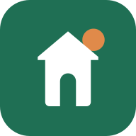
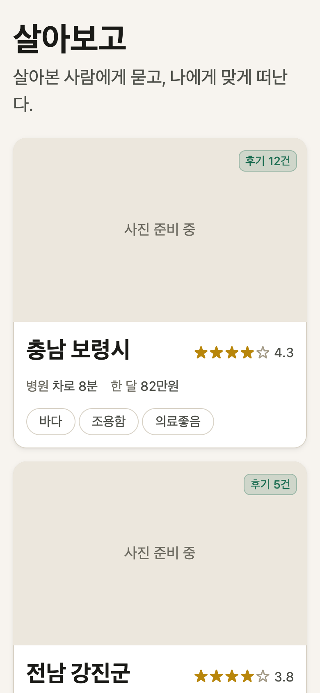

은퇴 시니어가 지방에서 한 달 살아보기를 결정할 때 필요한 정보를 모읍니다. 관광지가 아니라 “여기서 한 달 살 수 있는가”를 먼저 보여줍니다 — 병원·약국 접근성, 한 달 실비, 실제 체류자의 검증된 후기.
Next.js(PWA) + Supabase로 구현 중입니다. 한국관광공사 TourAPI 연동을 완료했고, 지역 카드 피드가 동작합니다. 현재 로컬 개발 단계이며 지도 화면 구현을 위해 카카오맵 신청을 드립니다.
